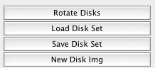
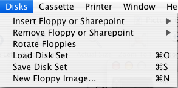

Disk Drives
Introduction Serial Port Disk Drives Cassettes 850 Emulation
Printer Emulation Preferences Release History Credits
|
|
Sio2OSX
Help Disk Drives Introduction Serial Port Disk Drives Cassettes 850 Emulation Printer Emulation Preferences Release History Credits |

This section of the window provides pushbuttons alllowing you to access some of the common disk functions that are available in the Disks menu.
Save Disk Set Button
This button allows the user to save the names of the disk images that are currently in the drives to a file, to be loaded later. The file that the set is save in has an extension of ".set", and it is a human readable text file, containing the paths of the image files, or "Empty" or "Off" for a drive that has no disk.Load Disk Set Button
This button allows the user to load a disk set saved earlier with the Save Disk Set Button. The user is allowed to browse for the set file, displaying files ending in ".set". Sio2OSX then loads the disk images specified in the file into the corresponding drives. If a drive in the set file is "Empty" or "Off", no changes are made to the drive. This allows the user to load multiple disk sets sequentially.Rotate Disks Button
This button rotates the current inserted floppies among the drives. This may be useful for playing multiple disk games.New Disk Image Button
This button will display a new window which you may use to create a new disk image (.atr only). This new image will be saved in .atr format.
In the Create Disk Image window, you may choose a format of a disk. Note that not all formats are supported by all Atari DOSes. There are three standard formats:
You can also select any other format, by clicking Custom and setting Number of sectors and Bytes per sector. Please make sure your Atari DOS supports this format, otherwise the image will be unusable.
- Single density (40 tracks * 18 sectors/track * 128 bytes/sector = 90 KB)
- Medium density (40 tracks * 26 sectors/track * 128 bytes/sector = 130 KB)
- Double density (40 tracks * 18 sectors/track * 256 bytes/sector = 180 KB)
If 256 bytes per sector are selected, you can choose between 128 and 256 Bytes in boot sectors. Physically, boot sectors (first three sectors on a disk) are also 256 bytes long, but only 128 are transmitted between the Atari and a disk drive (upper halves of sectors are not used). There are disk images with 128 bytes in boot sectors and disk images with 256 bytes in boot sectors. Sio2OSX supports both, but other emulators don't. Except some special cases, we recommend 128 for ATR images.
If the "Insert New Disk image into drive" checkbox is checked, the created image will be mounted on the specified drive.

The Disks menu on Sio2OSX allows you to insert and remove digital media into the emulator, the same way you would on a real Atari. It has the following menu selections:
Insert Floppy (cmd-1 through cmd-8)
This sub-menu allows you to insert an image file or a Mac folder (as a Sharepoint) into any of the 8 emulated disk drives. A .atr, .dcm, or .xfd file may also be loaded into Sio2OSX by double-clicking it in the finder, or dragging it to the Sio2OSX Icon.Remove Floppy (ctrl-cmd-1 through ctrl-cmd-8, and ctrl-cmd-0)
This sub-menu allows you to remove a image file or Sharepoint from one of the emulated disk drives, or you may empty all of the drives at once.Rotate Floppies
This menu item rotates the current inserted floppies among the drives. This may be useful for playing multiple disk games.Save Disk Set Button
This menu item allows the user to save the names of the disk images that are currently in the drives to a file, to be loaded later. The file that the set is save in has an extension of ".set", and it is a human readable text file, containing the paths of the image files, or "Empty" or "Off" for a drive that has no disk.Load Disk Set Button
This menu item allows the user to load a disk set saved earlier with the Save Disk Set Button. The user is allowed to browse for the set file, displaying files ending in ".set". Sio2OSX then loads the disk images specified in the file into the corresponding drives. If a drive in the set file is "Empty" or "Off", no changes are made to the drive. This allows the user to load multiple disk sets sequentially.New Floppy Image
This item will display a new window which you may use to create a new disk image. This new image will be saved in .atr format. (See the New Disk Image Button description above).